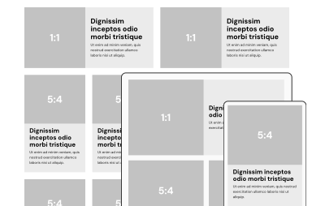

Para diseñar
Archivo de Figma con estilos y componentes listos para usar como base en wireframes y diseños. Adaptado para celulares, tabletas y escritorio.
Para desarrollar
Sitio en Jekyll con los mismos estilos y componentes ya implementados en HTML/CSS. Incluye UIKit para funcionalidades con JavaScript (con la idea de reemplazarlo por JavaScript personalizado más adelante). Compatible con administradores de contenido como SiteLeaf.

Adaptativo
Puntos de quiebre en 641px (móvil) y 1025px (tableta), con ancho máximo de 1448px. Incluye imágenes responsive con srcset, o picture y source.
Optimizado
Buenas calificaciones en rendimiento, accesibilidad y optimización para buscadores. Incluye texto alternativo para imágenes, atributos ARIA, metatags de Jekyll SEO y RSS automatizado. Además, el HTML y CSS se generan comprimidos.
Flexible
Estilos y componentes modificables tanto en Figma como en la carpeta de desarrollo. Puedes trabajar directamente en Jekyll o usar los archivos HTML y SASS en cualquier otro entorno.